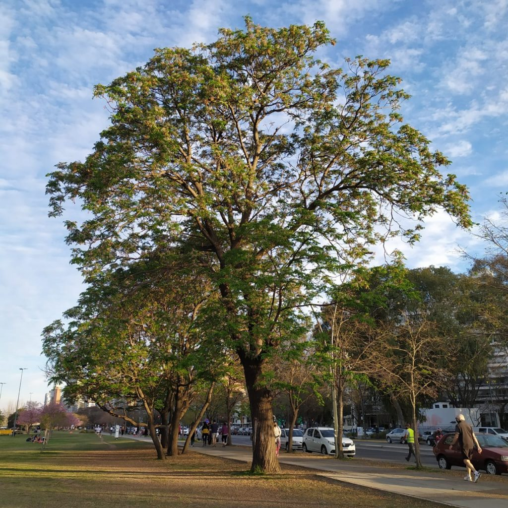

Paraíso (Elaeagnus angustifolia L.)

- Familia: Elaeagnaceae.
- Tronco: a menudo con múltiples retonos.
- Corteza: rugosa, pardo oscuro.
- Copa: tiene una forma bastante amplia y redondeada.
- Hoja: caduca, lanceoladas, color glauco.
- Flor: Pequeñas, amarillas, perfumadas en primavera.
- Fruto: pequeñas bolitas de color amarillo las cuales contienen su semilla dentro.
- Usos: formación de setos vivos, árbol utilizado en zonas urbanas.
- Floración: ocurre en primavera, generalmente entre marzo y junio, dependiendo del clima y la ubicación.
- Fructificacion: ocurre generalmente a finales del verano y principios del otoño.
- Reproducción: por semillas y esquejes en zonas templadas. Florece de mayo a julio, fructifica con frutos similares a aceitunas, marrón con reflejos rojos.

Hoja
Fruto